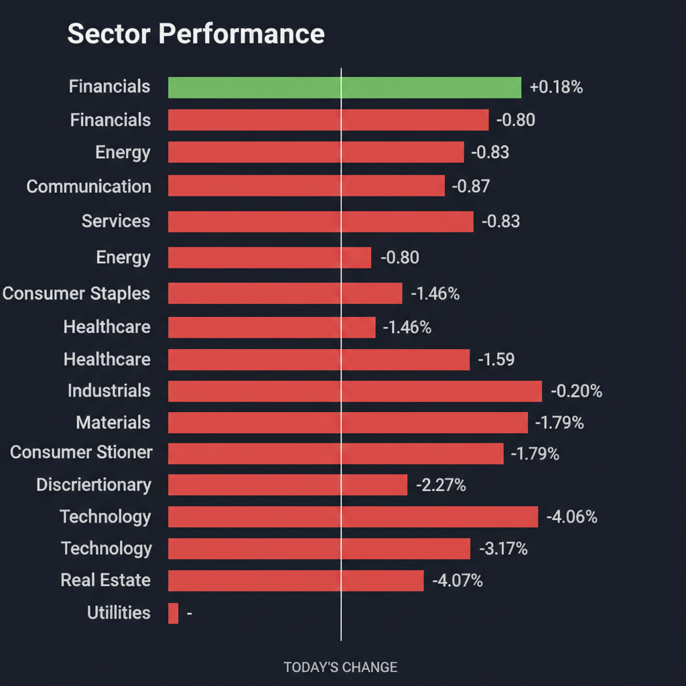
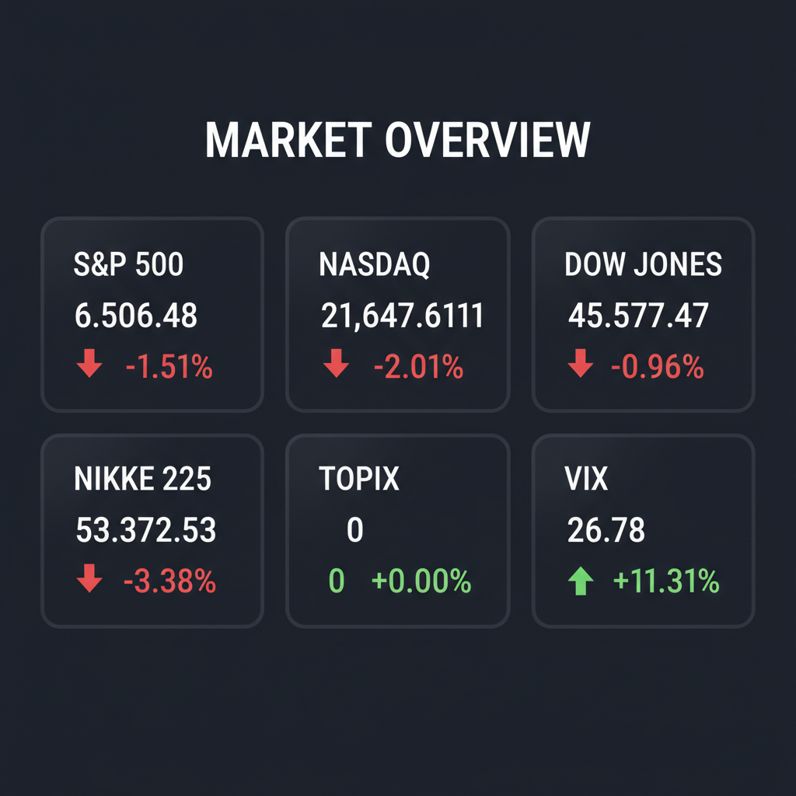

Daily Investment Report - 2026-03-22
Generated: 2026/3/22 8:11:51


投資チームミーティングの結果を踏まえ、現在の市場環境と今後の戦略を統合した最終投資レポートをお届けします。
1. エグゼクティブサマリー
- 現在の市場は、中東の地政学リスク激化とインフレ再燃（スタグフレーション懸念）により、VIX指数が26を超える深刻なリスクオフ（パニック）局面にあります。
- チーム内では「防衛的な資金保全とヘッジ」を最優先すべきとの見解が大勢を占める一方、この暴落を「次世代テーマ株の仕込み場」と捉える意見も出拠しており、明確な意見の対立が見られます。
- 結論として、本日は安易な押し目買いを避け、キャッシュ比率を大幅に高めつつ、インフレ耐性のあるバリュー株や防衛・エネルギー関連の「隠れた成長株」の底打ちを監視する待機戦略を推奨します。
2. 注目銘柄リスト
強気（買い推奨）
- セイノーホールディングス（9076） [約4,000億円]: 物流の「2024年問題」を逆手にとった業務効率化と価格転嫁に成功しており、PBR1倍割れの割安さと実質無借金の財務基盤が下落相場での強力な下値支持となるため。
- ラクスル（4384） [約700億円]: BtoBプラットフォームの性質上、粗利益率が高くインフレ下でも価格転嫁が容易であり、フリーキャッシュフローの拡大が定着しているため。
- アストロスケールHD（186A） [約1,000億円]: 宇宙ゴミ除去など各国の安全保障・インフラ防衛に直結する国策テーマであり、地政学リスクの高まりが中長期的な爆発的成長の追い風となるため（※相場沈静化後の打診買い推奨）。
中立（様子見）
- リベラウェア（218A） [約100億円]: 屋内特化型小型ドローンという独自の防衛・インフラ技術を持つものの、直近の決算マイナス評価と相場全体のモメンタム悪化により、テクニカルな底打ちシグナルを待つ必要があるため。
- 米国の中小型エネルギー・パイプライン企業（MLP等） [数億〜数十億ドル規模]: 地政学リスクによるエネルギー高騰の恩恵とインフレ耐性を持つが、市場全体のパニック売りに連れ安するリスクがあるため、VIX指数の低下を待ってエントリーを探る局面。
弱気（警戒）
- 神戸物産（3038） [約1兆円]: 円安と原材料高というインフレの直撃により利益率の悪化が表面化しており、過去の高PERが剥落する「バリュートラップ」に陥る危険性が高いため。
- サンバイオ（4592） [約300億円]: 直近の決算マイナスインパクト銘柄であり、高金利の長期化が予想される現在のマクロ環境下では、資金枯渇（キャッシュバーン）リスクを伴う赤字バイオ株への投資は極めて危険であるため。
3. セクター推奨ランキング
- 1位：エネルギー（XLE等）：中東情勢の地政学リスクとインフレ再燃に対する最も直接的なヘッジ手段であり、現在の下落相場においても驚異的な相対的強さ（RS）を維持しているため。
- 2位：金融（XLF等）：インフレ長期化に伴う金利の高止まりが銀行の純利ざや（NIM）拡大に寄与し、現在の大波乱相場において資金の数少ない逃避先として機能しているため。
- 3位：防衛・宇宙インフラ：現代戦の主役となるドローンや衛星通信、高エネルギーパルス技術など、各国の国防予算増額の恩恵を直接受ける構造的な成長テーマであるため。
- 4位：ヘルスケア・特定ニッチ食品：GLP-1の普及というマクロ環境に左右されないゲームチェンジが起きており、大手食品メーカーが苦戦する裏で、特定のニッチ需要を掴む新興企業にチャンスが生まれているため（ただし銘柄選別が必須）。
- 5位：公益事業・不動産（※回避推奨）：金利高止まりの直撃を受ける債券代替セクターであり、テクニカル的にも完全に下値支持線を割り込み、さらなる信用収縮の火種となるリスクが高いため。
4. 今週の注目イベント
- 今週：主要企業（Ecolab、Novartis、3Mなど）の事業再編およびM&A関連の動向発表
- 近日中：英国・スターマー首相による、エネルギー価格高騰を受けた生活費（Cost-of-living）対策の緊急会議
- 随時：米国国土安全保障省（DHS）の政府閉鎖問題および、イーロン・マスク氏の介入も報じられた空港保安・物流インフラへの影響に関する政治協議
- 随時：中東情勢（イラン戦争）の軍事衝突エスカレーションおよび、世界のエネルギー供給網への影響に関するヘッドラインニュース
5. リスク要因
- エネルギー由来のスタグフレーション：イラン戦争のエスカレート（ホルムズ海峡封鎖など）により原油価格が制御不能に高騰し、景気後退とインフレが同時に進行するリスク。
- システマティックなパニック売り：VIX指数が26を突破したことで、機械的なプログラム売り（CTA等）が発動し、優良株・中小型株を問わず市場全体の流動性が枯渇するリスク。
- 高金利長期化による信用収縮：FRBの利下げ期待が消滅することで、赤字の中小型グロース株の資金ショートや、商業用不動産セクターを起点とする金融機関のクレジット・クランチ（貸し渋り）が発生するリスク。
- 国内政治とサプライチェーンの分断：米国DHSの政府閉鎖が長引き、空港や国境の物流インフラが麻痺することで、政府契約企業への支払い遅延やさらなるインフレ圧力を招くリスク。
6. アクションアイテム
- キャッシュ比率の引き上げ：落ちてくるナイフを掴むような新規の「押し目買い」を直ちに停止し、ポートフォリオの現金比率を30%〜40%水準まで引き上げる。
- 脆弱なポジションの即時損切り：金利上昇の直撃を受ける不動産・公益セクターや、フリーキャッシュフローがマイナスの中小型グロース株（赤字バイオ・SaaS等）をポートフォリオから排除する。
- テールリスクヘッジの実行：総資産の1〜2%のコストを用いて、S&P500やNASDAQのプットオプション、またはVIXコールを購入し、市場全体のさらなる暴落に備える保険をかける。
- 監視リストの構築と待機：下落相場でも値を保っている「セイノーHD」や「エネルギー・防衛関連の中小型株」をウォッチリストに入れ、VIX指数のピークアウトや明確なテクニカル反転シグナル（ダブルボトム等）が出現するまで現金を持ったまま待機する。